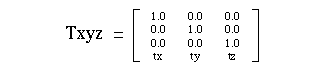

Return to previous page | Return to menu | Go to next page
void
Matrix function
Move current matrix
void slTranslate(tx , ty , tz)
FIXED tx ;
FIXED ty ;
FIXED tz ;
tx X-axis travel ty Y-axis direction travel tz Z-axis direction travel
Multiply the current matrix by the translation matrix.
The translation matrix is expressed as shown below.
None

Note) tx, ty, and tz are parameter substitution values.
Reference: Chapter 4 Coordinate transformation
slTranslate